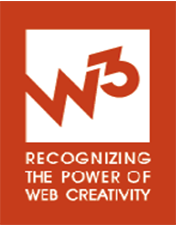

awards we've won
- 

Nick Kishfy
Founder & CEO
Nick has been launching start-ups, leading teams, and shipping products since the first Internet gold rush. Along the way, he’s learned that while starting is required, finishing is what matters. Finishing requires skill, focus, and passion—in a word, execution—and that’s what he’s built MojoTech to provide. He’s dedicated to the never-ending improvement of MojoTech and to helping MojoTech’s clients finish what they start.
Chris Shoemaker
Partner & CTO
Chris has nearly 20 years experience in commercial and open source software engineering. In addition to providing the leadership and expertise to solve clients’ toughest technology problems, he specializes in web application scalability and database design. Chris has previously worked as a software consultant, a software architect for Internet start-ups, and for five years as a scientist for the U.S. Navy. Chris has a history of open source contributions to projects such as GnuCash, Git, Firefox, and rsync, dating back to 2004. Chris earned a B.S. in Physics and a M.S. in C.S. from WPI.
Duncan Shaw
Managing Director NYC
Duncan is Mojo’s citizen of the world, bringing loads of software, brand, and business development experience from his time in Australia, China, Europe, and North America. Over the last 15 years, he has guided product and brand launches for startups, high growth, and Fortune 500 companies alike. When he is not at MojoTech, you can find Duncan torturing himself in triathlons or white water rafting somewhere in the world.
David Berube
VP Strategy
David is an innovator and serial entrepreneur. Before joining MojoTech, David launched several successful products that attracted countless users and millions of dollars in venture capital. Providence Business News declared him a Rising Star of Innovation and Rhode Island’s 40 Under 40. David lends his experience launching digital products and building companies to all of MojoTech’s clients.
Matt Forsyth
Development Director
Matt has been working as a Software Engineer and Internet entrepreneur since 1999. Half a lifetime ago, Matt earned a B.A. in Software Engineering from Boston University. Since then, Matt’s accomplishments include working as Lead Software Architect for Rentometer and for Globe Wireless, contributing to the Apache Jetspeed project, and founding a startup that won the “Best of the Web” award from Forbes Magazine. Now, he helps MojoTech’s clients to make their ideas even better and guides much of the development that powers MojoTech’s projects.
Andrew Shedd
Design Director
Andrew’s affinity for startups dates back to a three-employee landscape architecture practice at age 16. Garden marker-ups and patio concepts now behind him, the Carnegie Mellon grad. helps clients bring their product and brand visions to fruition. Andrew’s work experience spans a multitude of internal and contractual capacities for major organizations including Digitas, American Express, Titleist, Coach Inc., Hard Rock Cafe, Disney, Zappos, Tufts University, and DevineMulvey. He has also collaborated on footwear and apparel projects with Reebok and Howard Univ., respectively. His expertise lies in brand strategy and visual and interaction design. He is also the Creative Director at vitaminTHICK, a progressive streetwear label that is sold in 25 brick and mortar locations from New York to Los Angeles.
Erin Cummins
Product Manager
Erin is an experienced product manager who launched herself into the New York tech scene after completing her MBA in entrepreneurship at Baruch College in 2008. She has honed her drive for simple, focused apps and features on various startups in social media, gaming, and online dating. Erin loves the product role and its potential for solving real world problems. She also gets excited about digital marketing, business development, and growing MojoTech in New York.
Craig Jolicoeur
Developer
Craig is a talented developer that brings many years of experience to the Mojo Team. He has worked the Cambridge VC-startup scene for several web startups, creates and manages several OSS projects, and is an open source advocate. Craig always has one or two (or twelve) side projects going on which range from Ruby software, mobile software, or electronics hacking. Craig resides in Rhode Island with his wife and two children. He is a dedicated cyclist, Boston Celtics fan, and Vim user.
Aaron Rosenberg
Developer
Aaron Rosenberg studied Computer and Biomedical Engineering at Tufts University. Before joining MojoTech, he worked at a gaming startup in Ohio making web and iOS games. A certified Memeologist and defender of The Crown, Aaron can be found CATaloging memes, ensuring all respect the King’s English, and pushing portmanteaus to the limit.
Ryan Coughlin
Designer
Ryan is Boston-born and a Maine-raised designer and front-end developer. After graduating from Champlain College, he moved back to the Boston area to freelance for various agencies and start-ups focusing on product design. When not designing, he’s either out fishing, hiking, or shooting photos.
Mike McDermott
Developer
Mike is a Georgetown graduate and a recovering English major. He has been programming in Ruby since 2006, and his technical background includes the design and implementation of identity management, financial, and human resource systems in the higher education sector. His non-technical background includes undercover researcher, caddy, and being a mascot for a tennis tournament. While a Rhode Island resident, he hails from New Jersey, has met the Boss, and enjoys the shore. With three children, he has no free time, but if he did, he would learn a flavor of Lisp, play basketball, and possibly sleep.
David Dufresne
Developer
David Dufresne is a fresh graduate from Brown University’s Masters program. While there, he pursued his eclectic interests in mobile development, vision, graphics, and animation. David spends his free time with creative writing, 3D modeling, and practicing the theremin.
Aaron Snyder
Creative Developer
Aaron Ellis Snyder graduated cum laude as a photojournalism major from Ohio University’s School of Visual Communication. In his freelance new media marketing career, his clients ranged from major universities to nationally recognized bio-tech companies. His expertise ranges from video production to web development, with projects featured on CBS Sunday Morning and multiple PBS affiliates. Aaron helps MojoTech’s clients conceptualize and execute stunning digital communications packages that deliver results.
Will Farrell
Developer
Will got his start writing software in a corporate environment. He designed and implemented complex systems, all the while reading Knuth for fun in his spare time. Although thinking about algorithms is fun, he also plays piano, guitar, drums, and heartstrings. After hours, he occasionally masquerades as an undercover food blogger. Will rarely wears ties.

Eli Williamson
Designer
Eli enjoys the creative edge of design and the clean order of code. He has helped big bands on the Warped Tour, and big brands in retail rapidly prototype, design, and build web and mobile apps. Eli is a music-listening, key-jamming, photo-snapping, coffee-drinking artist with a passion for design and development.
Neal Shoemaker
Quality Manager
Neal started his foray into quality analysis in 2007 and has since gained experience in organizing test plans, regression testing, finding and reporting bugs, automating test sequences, and interacting with applications in an unconventional manner.
Sam Saccone
Creative Developer
Sam Saccone is a 2011 Ohio University graduate in the School of Visual Communication where he majored in photojournalism and minored in computer science. Some of his work can be seen on MediaStorm, CNN, Fortune, and The Virginian Pilot. When he is not in front of his computer, you can most likely find him playing some old bluegrass reel on his mandolin.
Matt Rossi
Designer
Matt got his start designing websites and t-shirts for bands (including his own) in the early 2000’s. After graduating from New England Tech, Matt has worked for many years with a wide range of corporate and small business clients in and around New England. As a designer and front-end developer, Matt has the ability to take projects from conception to completion. Now, married with young children, he enjoys spending his free time with his family and dog by the bay.
David Leal
Developer
David enjoys spending time with his family, writing software, studying and thinking about all angles of software development. He is a big Calvin & Hobbes fan, and like Calvin, seems to have a knack for forgetting everything but the most useless stuff. David lives by the maxim, “do what you love and you won’t have to work a single day of your life.” He is happy to report that during his time at MojoTech, he has had to work very little.
Paul Tyng
Developer
Paul has been developing web apps since high school. He has built SaaS applications during the first dot-com bubble, large scale e-commerce applications, online video advertising apps used in places like Hulu and YouTube, and even started his own online custom clothing site. In addition to commercial ventures Paul has made significant contributions to open source projects including ServiceStack (used by StackExchange), Jabbr, and Twitter’s Bootstrap just to name a few.
Suresh Murty
Developer
Suresh is a self taught developer with experience in desktop programs and Node.js. After graduating from the University of Wisconsin with a degree in economics, he found his passion in software and started learning about everything from the metal to the cloud. Suresh enjoys a variety of activities ranging from ultimate frisbee and rock climbing to reading and taking unplanned naps. He also makes awesome cookies.
Mark Battersby
Developer
After receiving a degree in Psychology from the University of Rhode Island, Mark quickly disregarded Psychology to acquire currency as a programmer. He worked closely with clients, supporting software used in Emergency Departments worldwide. Mark plays synthesizers and organs, and is an avid music fan. He had contributed to (read: sabotaged) a number of MojoTech's collaborative playlists prior to his employment here. He prefers 1½" to 2" ties.
Winston
Chief Enthusiasm Officer
Having worked his way up from the mean streets of the East Providence SPCA, Winston has been jumping and lap-napping at MojoTech for almost three years. He gets very nervous when Matthew Forsyth isn’t around and hates fire drills. He is happiest when being chased by a larger mammal.
Emma
Chief Napping Officer
After graduating from Trim Time Obedience School in 2005, Emma moved to Rhode Island to begin her career in the tech industry. For several years, Emma has provided comic relief and snuggles at the fast-paced and high-tech Mojo office (when not performing her primary job responsibilities, that is). Notwithstanding her tech background, Emma’s mousing and typing skills leave something to be desired, so please excuse her delayed responses to electronic communications. In her free time (let’s be honest: it’s all free time), Emma enjoys swimming, hiking, snoozing, and frisbee-catching.